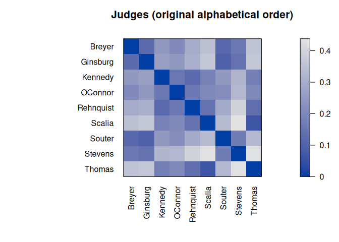
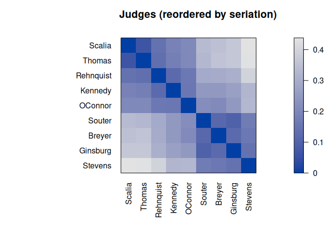
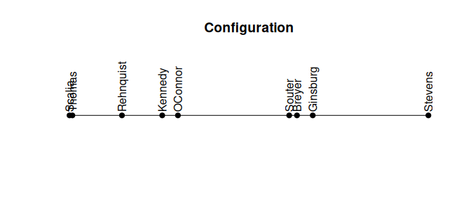

Maintainer: Michael Hahsler
Introduction
Seriation arranges a set of objects into a linear order given available data with the goal of revealing structural information. This package provides the infrastructure for ordering objects with an implementation of many seriation/ordination techniques to reorder data matrices, dissimilarity matrices, correlation matrices, and dendrograms (see below for a complete list). The package provides several visualizations (grid and ggplot2) to reveal structural information, including permuted image plots, reordered heatmaps, Bertin plots, clustering visualizations like dissimilarity plots, and visual assessment of cluster tendency plots (VAT and iVAT).
Implemented seriation methods and criteria:
- Documentation of the implemented seriation methods
- Documentation of the implemented seriation criteria
A detailed introduction is available in the package vignette: Introduction to the R package seriation
The following R packages use seriation: adepro, arulesViz, baizer, cellGeometry, ChemoSpec, ClusteredMutations, corrgram, corrplot, corrr, dendextend, DendSer, dendsort, disclapmix, elaborator, flexclust, futurize, GAPR, ggraph, heatmaply, MEDseq, ockc, PairViz, protti, Proximum, RMaCzek, tidygraph, treeheatr, vcdExtra
To cite package ‘seriation’ in publications use:
Hahsler M, Hornik K, Buchta C (2008). “Getting things in order: An introduction to the R package seriation.” Journal of Statistical Software, 25(3), 1-34. ISSN 1548-7660. doi:10.18637/jss.v025.i03 https://doi.org/10.18637/jss.v025.i03.
@Article{,
title = {Getting things in order: An introduction to the R package seriation},
author = {Michael Hahsler and Kurt Hornik and Christian Buchta},
year = {2008},
journal = {Journal of Statistical Software},
volume = {25},
number = {3},
pages = {1--34},
doi = {10.18637/jss.v025.i03},
month = {March},
issn = {1548-7660},
}Available seriation methods to reorder dissimilarity data
Seriation methods for dissimilarity data reorder the set of objects in the data. The methods fall into several groups based on the criteria they try to optimize, constraints (like dendrograms), and the algorithmic approach.
Dendrogram leaf order
These methods create a dendrogram using hierarchical clustering and then derive the seriation order from the leaf order in the dendrogram. Leaf reordering may be applied.
- DendSer - Dendrogram seriation heuristic to optimize various criteria
- GW - Hierarchical clustering reordered by the Gruvaeus and Wainer heuristic
- HC - Hierarchical clustering (single link, avg. link, complete link)
- OLO - Hierarchical clustering with optimal leaf ordering
Dimensionality reduction
Find a seriation order by reducing the dimensionality to 1 dimension. This is typically done by minimizing a stress measure or the reconstruction error.
- MDS - classical metric multidimensional scaling
- MDS_angle - order by the angular order in the 2D MDS projection space split by the largest gap
- isoMDS - 1D Kruskal’s non-metric multidimensional scaling
- isomap - 1D isometric feature mapping ordination
- monoMDS - order along 1D global and local non-metric multidimensional scaling using monotone regression (NMDS)
- metaMDS - 1D non-metric multidimensional scaling (NMDS) with stable solution from random starts
- Sammon - Order along the 1D Sammon’s non-linear mapping
- smacof - 1D MDS using majorization (ratio MDS, interval MDS, ordinal MDS)
- TSNE - Order along the 1D t-distributed stochastic neighbor embedding (t-SNE)
- UMAP - Order along the 1D embedding produced by uniform manifold approximation and projection
Optimization
These methods try to optimize a seriation criterion directly, typically using a heuristic approach.
-
ARSA - optimize the linear seriation criterion using simulated annealing
- Branch-and-bound to minimize the unweighted/weighted column gradient
- GA - Genetic algorithm with warm start to optimize any seriation criteria
- GSA - General simulated annealing to optimize any seriation criteria
- SGLS - stochastic greedy local search to improve an initial order for a specified seriation criterion.
- QAP - Quadratic assignment problem heuristic (optimizes 2-SUM, linear seriation, inertia, banded anti-Robinson form)
- Spectral seriation to optimize the 2-SUM criterion (unnormalized, normalized)
- TSP - Traveling salesperson solver to minimize the Hamiltonian path length
Other Methods
- Identity permutation
- OPTICS - Order of ordering points to identify the clustering structure
- R2E - Rank-two ellipse seriation
- Random permutation
- Reverse order
- SPIN - Sorting points into neighborhoods (neighborhood algorithm, side-to-side algorithm)
- VAT - Order of the visual assessment of clustering tendency
A detailed comparison of the most popular methods is available in the paper An experimental comparison of seriation methods for one-mode two-way data. (read the preprint).
Available seriation methods to reorder data matrices, count tables, and data.frames
For matrices, rows and columns are reordered.
Seriating rows and columns simultaneously
Row and column order influence each other.
- BEA - Bond Energy Algorithm to maximize the measure of effectiveness (ME)
- BEA_TSP - TSP to optimize the measure of effectiveness
- BK_unconstrained - Algorithm by Brower and Kyle (1988) to arrange binary matrices.
- CA - calculates a correspondence analysis of a matrix of frequencies (count table) and reorders according to the scores on a correspondence analysis dimension
Seriating rows and columns separately using dissimilarities
- Heatmap - reorders rows and columns independently by calculating row/column distances and then applying a seriation method for dissimilarities (see above)
Seriate rows in a data matrix
These methods need access to the data matrix instead of dissimilarities to reorder objects (rows). The same approach can be applied to columns.
- PCA_angle - order by the angular order in the 2D PCA projection space split by the largest gap
- LLE reorder along a 1D locally linear embedding
- Means - reorders using row means
- PCA - orders along the first principal component
- TSNE - Order along the 1D t-distributed stochastic neighbor embedding (t-SNE)
- UMAP - Order along the 1D embedding produced by uniform manifold approximation and projection
Installation
Stable CRAN version: Install from within R with
install.packages("seriation")Current development version: Install from r-universe.
install.packages("seriation",
repos = c("https://mhahsler.r-universe.dev",
"https://cloud.r-project.org/"))Usage
The used example dataset contains the joint probability of disagreement between Supreme Court Judges from 1995 to 2002. The goal is to reveal structural information in this data. We load the library, read the data, convert the data to a distance matrix, and then use the default seriation method to reorder the objects.
## Breyer Ginsburg Kennedy OConnor Rehnquist Scalia Souter Stevens
## Ginsburg 0.120
## Kennedy 0.250 0.267
## OConnor 0.209 0.252 0.156
## Rehnquist 0.299 0.308 0.122 0.162
## Scalia 0.353 0.370 0.188 0.207 0.143
## Souter 0.118 0.096 0.248 0.220 0.293 0.338
## Stevens 0.162 0.145 0.327 0.329 0.402 0.438 0.169
## Thomas 0.359 0.368 0.177 0.205 0.137 0.066 0.331 0.436
order <- seriate(d)
order## object of class 'ser_permutation', 'list'
## contains permutation vectors for 1-mode data
##
## vector length seriation method
## 1 9 SpectralHere is the resulting permutation vector.
get_order(order)## Scalia Thomas Rehnquist Kennedy OConnor Souter Breyer Ginsburg
## 6 9 5 3 4 7 1 2
## Stevens
## 8Next, we visualize the original and permuted distance matrix.
pimage(d, main = "Judges (original alphabetical order)")
pimage(d, order, main = "Judges (reordered by seriation)")

Darker squares around the main diagonal indicate groups of similar objects. After seriation, two groups are visible.
We can compare the available seriation criteria. Seriation improves all measures. Note that some measures are merit measures while others represent cost. See the manual page for details.
## 2SUM AR_deviations AR_events BAR Gradient_raw Gradient_weighted
## alphabetical 872 10.304 80 1.8 8 0.54
## seriated 811 0.064 5 1.1 158 19.76
## Inertia Lazy_path_length Least_squares LS MDS_stress ME
## alphabetical 267 6.9 967 59 0.62 99
## seriated 364 4.6 942 72 0.17 101
## Moore_stress Neumann_stress Path_length RGAR Rho
## alphabetical 7.0 3.9 1.8 0.48 0.028
## seriated 2.5 1.3 1.1 0.03 0.913Some seriation methods also return a linear configuration where more similar objects are located closer to each other.
get_config(order)## Breyer Ginsburg Kennedy OConnor Rehnquist Scalia Souter Stevens
## 0.24 0.28 -0.15 -0.11 -0.27 -0.42 0.21 0.61
## Thomas
## -0.41
plot_config(order)
We can see a clear divide between the two groups in the configuration.
References
- Michael Hahsler, Kurt Hornik and Christian Buchta, Getting Things in Order: An Introduction to the R Package seriation, Journal of Statistical Software, 25(3), 2008. DOI: 10.18637/jss.v025.i03
- Michael Hahsler. An experimental comparison of seriation methods for one-mode two-way data. European Journal of Operational Research, 257:133-143, 2017. DOI: 10.1016/j.ejor.2016.08.066 (read the preprint)
- Hahsler, M. and Hornik, K. (2011): Dissimilarity plots: A visual exploration tool for partitional clustering. Journal of Computational and Graphical Statistics, 10(2):335–354. DOI: 10.1198/jcgs.2010.09139 (read the preprint; code examples)
- Reference manual for package seriation.